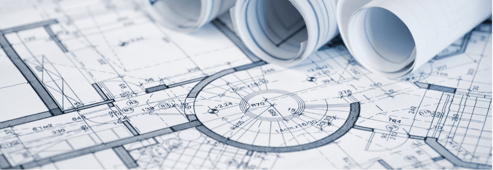
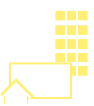

>Експертиза об’єктів будівництва

Дніпровська філія інституту «НДІПРОЕКТРЕКОНСТРУКЦІЯ» має розгалужену мережу замовників експертизи, як державного так і приватного сектору, тісно взаємодіє з органами державної влади та місцевого самоврядування по всій Україні.
Документи:
Анкета
Договір
Наші переваги
Державна
експертиза
будівництва
Працюємо
по всій
Україні
Розташовані
в центрі міста
і в центрі країни
Сертифіковані
експерти
по всім напрямам*
>2000
успішних
експертиз
в рік

Здійснюємо
експертизу об’єктів
усіх класів наслідків
Послуги експертизи об’єктів будівництва:
- 1.Експертиза будівель і споруд класу наслідків (відповідальності) СС1
- 2.Експертиза будівель і споруд класу наслідків (відповідальності) СС2
- 3.Експертиза будівель і споруд класу наслідків (відповідальності) СС3
- 4.Експертиза кошторисної частини проекту
- 5.Експертні оцінки
- 6.Безкоштовна консультація
Перелік експертних організацій,
що відповідають Критеріям, встановленим наказом Мінрегіону від 15.08.2017 № 204, та можуть проводити експертизу проектів будівництва перейти